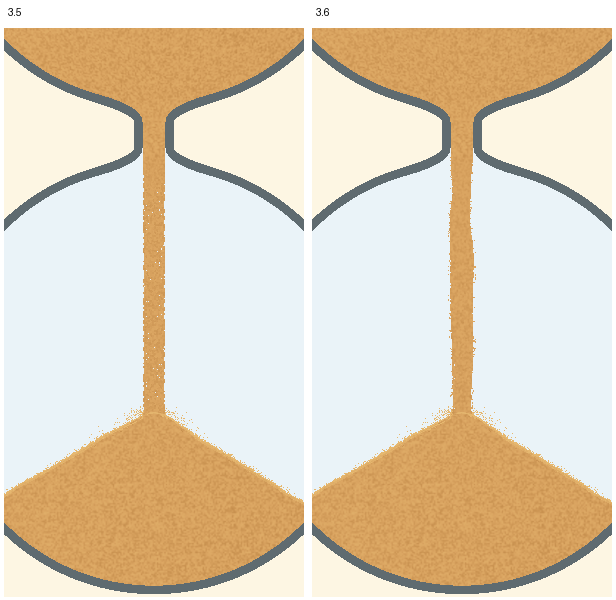
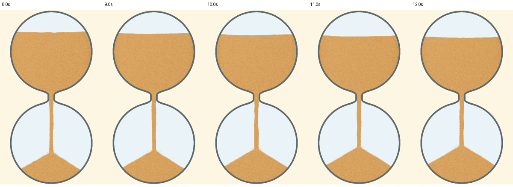
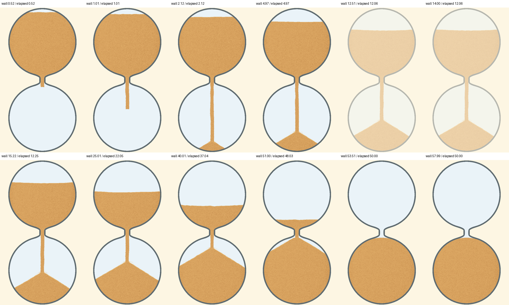
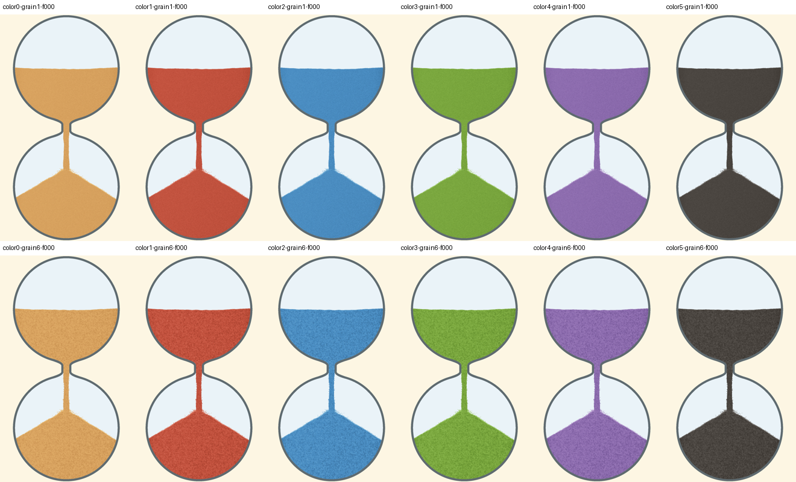

按计划分别检查速度和形状。3.5仍保留为两项失败的反例，旧验收记录未重写。
| 检查 | 3.5 | 3.6 |
|---|---|---|
| 同尺寸实图下行速度 | 约20～22像素/秒，上下接近 | 上段约108～110，下段约152～153像素/秒；保持短粒形状 |
| 去掉单粒毛边后的轮廓变化 | 约2.3%，近等宽直条 | 约19%，局部变化随沙下移；平均可见宽度仍接近旧版 |
| 粗细档位 | 粗细会影响纹理移动速度 | 最细与最粗速度接近；细粒重叠的颜色跳变已修正 |
上表条件：540×924画布、50秒计时、8～12秒阶段。速度来自实际PNG位移，不取着色器设定值。 五组连续实图覆盖默认、细、粗、中段与1080×1848，每组重算默认、30/30及60/60采样。 少数相似图案仍可能导致错误追踪，不把它解释为每帧都准确。

以下是60步/秒逻辑推进得到的真实画布帧，以30帧/秒播放；没有生成中间沙粒或插值补帧，不是实时性能测试。

墙钟60秒实录：50秒计时，约12秒暂停、15秒恢复，保留落定；没有音频和按钮画面。


双分辨率110张阶段图的主沙粒、沙量与玻璃几何一致；预定沙柱与连接范围之外的画面保持。 计时归零后在途动画继续，暂停画面冻结，绘制失败可回退。 另以37帧分别检查约33.94秒的出生相位边界和120秒计时中85.33秒的轮廓相位边界，未出现变化尖峰。
发布证据中连续序列保存原像素沙流裁切及坐标平移后的实测几何，已与完整帧逐像素核对；完整阶段图和全过程录像同时保留。 范围仅PC外观与相邻状态，不包含Android设备、音频或实时帧率验收。